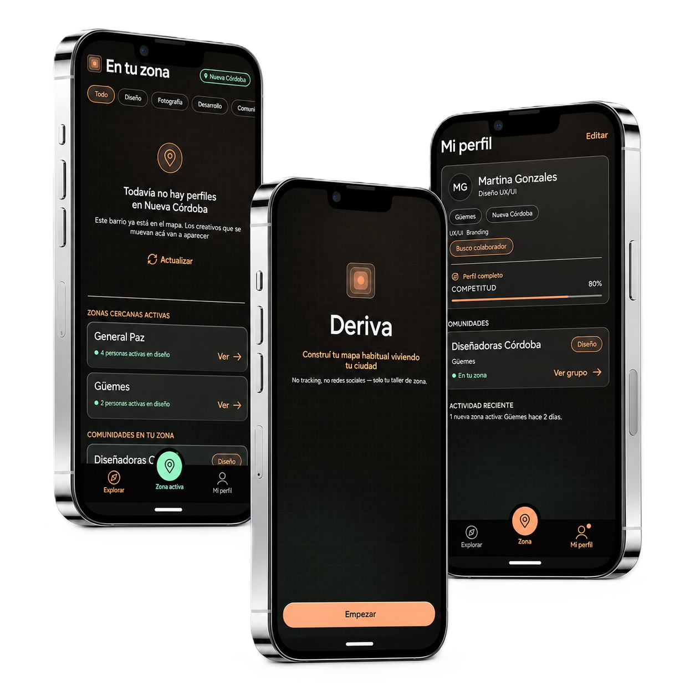
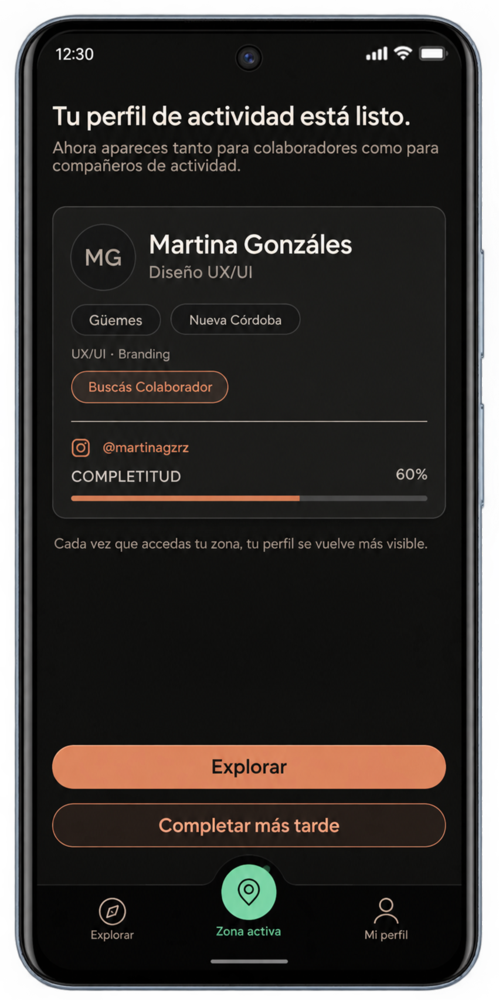
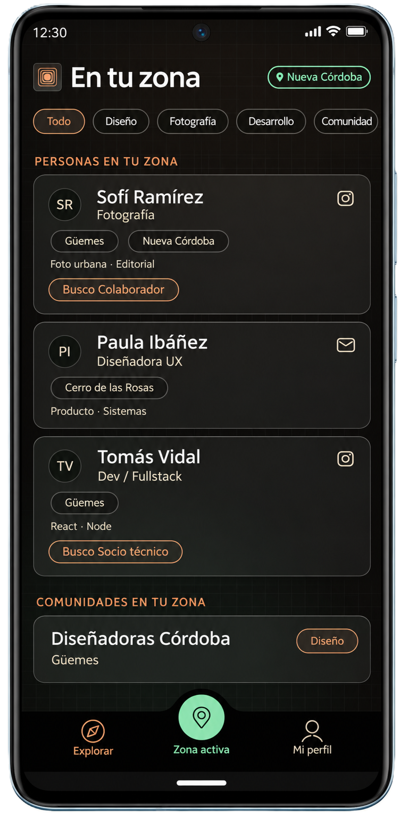
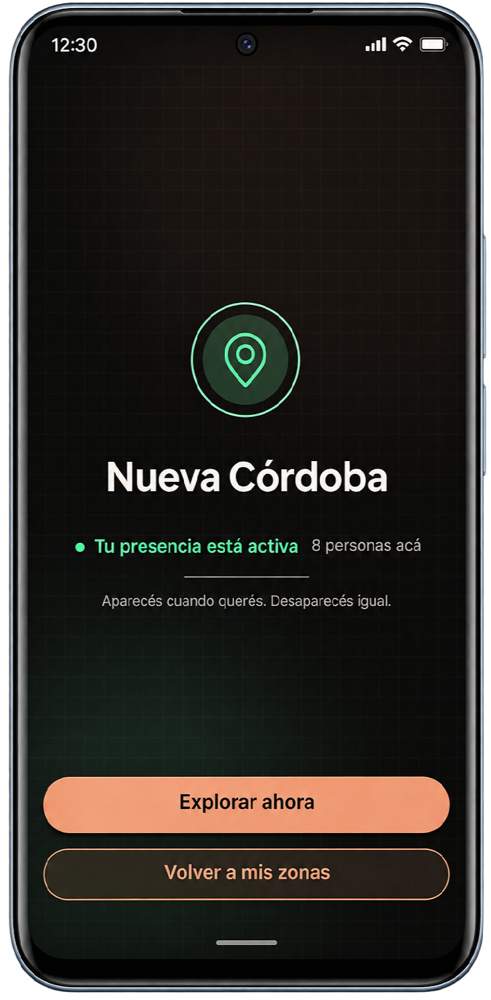

Una app mobile que conecta personas por afinidad profesional
y de estilo de vida, usando el contexto urbano compartido
como infraestructura de descubrimiento.
Product Designer
Product Strategy
Proyecto personal
Go-to-Market
Identidad de Producto

El proyecto
El encargo.
Deriva es una app mobile que actúa como infraestructura
de descubrimiento local: conecta personas y comunidades
usando el contexto geográfico compartido como señal
de afinidad. El desafío era resolver el problema del
huevo y la gallina de un marketplace de dos lados sin
lanzar una app vacía — y hacerlo con un modelo de datos
que generara valor desde el día uno.
Descubrimiento
Usuario y problema.
Dos perfiles de usuario con el mismo problema de fondo:
el contexto geográfico compartido no se convierte en
conexión porque no existía infraestructura que lo activara.
Perfil A - Profesional/Creativo
Diseñadores, devs, emprendedores — 25 a 40 años
El mejor socio o colaborador puede vivir a diez
cuadras. LinkedIn conecta con el mundo pero ignora
la proximidad. El networking local ocurría por azar
o eventos puntuales; sin nada que lo activara de
forma continua.
Perfil B - Estilo de vida
Runners, rollers, ciclistas urbanos — 20 a 45 años
Comunidades que crecían de forma orgánica sin
herramienta de descubrimiento local. La coordinación
dependía de Instagram y WhatsApp, sin forma de
conectar con quienes compartían el mismo circuito
y disponibilidad.
Estrategia de lanzamiento
Primero la ciudad, después la app.
La primera fase no usó app. El primer valor se creó a mano
para resolver el problema del huevo y la gallina antes de
construir infraestructura técnica. Así se llegó al
lanzamiento con comunidades reales ya indexadas y
conexiones que habían generado valor real y medible.
Sin app - En curso
Validación manual + mapeo de comunidades.
Matching curado a mano
50-100 personas en Córdoba
Referentes por comunidad
Lanzamiento - Futuro
Perfil + zona + exploración declarativa.
Activación voluntaria
Perfiles de comunidad territorial
Sin matching automático
Escala - A futuro
Matching automático + features avanzadas.
Matching por datos reales
Monetización activa
Notificaciones de afinidad
Solución
Alta fidelidad desde el primer flujo.
Desarrollé el prototipo en alta fidelidad desde la primera
iteración. No por estética — porque el producto depende
de señales visuales para funcionar. Testear con lo que
se va a construir fue una decisión metodológica,
no un adelanto de producción.

1. El primer valor
La pantalla de activación muestra lo que el usuario
construyó. El perfil tiene más peso visual que el
vacío — esa diferencia tenía que ser real para que
los testers la sintieran.

2. El momento de decisión
La exploración es donde la propuesta de valor se
valida o se rompe. La jerarquía de información está
diseñada para que la decisión de conectar ocurra
dentro de la app, no después.

3. Cierre del ciclo
La pantalla de zona activa es la que más se
subestima en wireframe. Es el momento en que el
usuario entiende que la app funciona sin GPS
pasivo — que su presencia es una elección.